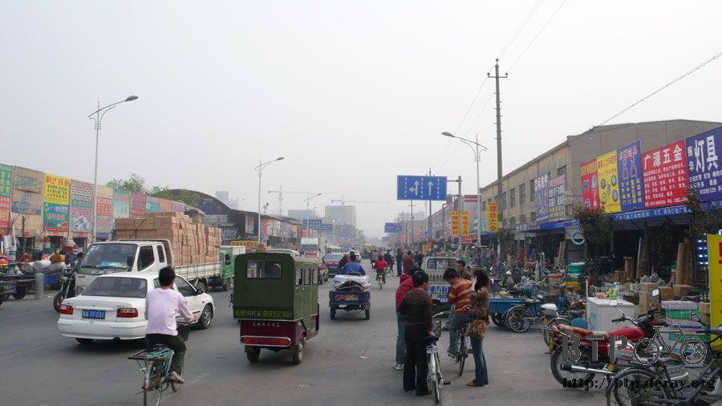

My Eyes~~ Keep Blowing~~
I strictly carried out my early bird principal so I woke up at four in the morning.
The day was getting bright already. God, the sun is coming out so early?
I lay back for a while more and woke up before five and started to pack.
Yang sir told me yesterday that the road to Xian will not be easy.
There’s about 1000Km to go and it’s full of coal trucks. The road is full of coal dust so after riding for a day your face will be all black.
He told me that when he went to restaurant the waiter laughed at him about the face.
The outspoken and energetic Yang sir left at five thirty.
I didn’t fall much behind. I left one hour later.
His destination is Beijing, 160Km away and my destination is Shihjuazhuang (Family Shih Village) also 160Km away.
It’s actually very easy to get there.
SI just have to keep going on the 107 National Freeway and don’t get off of it.

I had the walnut cookies and water for breakfast.
Not long after I started riding I saw a stand selling strawberries. Is it strawberry season already?
I got water mouthed so I stopped and ask for the price.
“10 bucks!”
10 bucks for half kilogram is a little expensive but it is strawberry it supposes to be expensive.
So I calculated, if 500 grams cost 10 bucks then it is 43 New Taiwanese (NT) and 100 grams is about 8 NT.
It is still cheaper than Taiwan.
The seller didn’t know what I was thinking so he added: “2.5Kg for 10 bucks!”
Really? That’s so cheap.

Therefore I bought 5 bucks of strawberry which means I got 1 Kg of strawberries with only 22 NT.
I ride and eat strawberries along the way.
At the beginning it tasted very good but after a while it started to get scary.
I felt like I was in “Fear Factor” eating worms with red body juice splashing out when I bite it.
I didn’t stop and after one hour I was glad that I finished the challenge.
Riding in China is so different than riding bike in Taiwan.
Most of people will encourage you and give you some moral support.
About 98% of people will gaze at me when I pass by.
About 60% of cars will look back on me when they pass by.
About 3% of pedestrians will wave their hands, chat with me, cheer for me or just tell me to go slowly or “bon voyage”.
It’s a warmth feeling. I am riding alone but I don’t feel lonely.
I feel that I have finished the strawberries that I will eat for my entire life. That’s enough.
About eleven I wanted to eat something salty to balance out the strawberries.
I ordered beef noodle, the noodle is wider than fettuccini, with some vegetable with gravy.
Noodle cost 3 bucks and since one egg cost 50 cents I ordered two to get a whole number.

Just like usual I was asked if I wanted beer. “Well, I will have one”.
This time is not Snow Flake brand beer instead I had “Bitter Gourd” brand.
The name is so interesting. The beer is so bitter what is good about it?
Just like the lines in the movie “Confession of Pain”: “The good part of the beer is that it taste bitter and bad.”
Well said. Since I drink beer like water, I will take it like source of hydration.
I slept in the dinner for half a hour after I finished my noodle.
The sun is not strong today, however it was blowing sand constantly.
Did I get so lucky to encounter a sandstorm?
Sunglasses are very useful; besides blocking UV light it also blocks the “Kamikaze” of the flying bugs and the airborne sands.
It was so boring riding on 107 freeway today.
I played music from my iPod otherwise I wouldn’t know how to entertain myself.
I arrived to Zhengding County at three in the afternoon.
The sandstorm was getting stronger and I almost can’t see the road.
Sands flew in the air becoming alive just like a science fiction movie.
I wanted to eat something and there were a lot of pineapple stands along the way.
They cut the pineapple in spiral shape then split it in 4 equal pieces and used poked it with a chopstick.
1 bucks per piece. I chat with the boss while I ate a piece.
He asked me how long I will take to ride to Xian. I told him about two weeks.
He told me that he will try to ride back to Xian on his next vacation.
The boss is from Xian and came here to work.

I arrived at Shihjiazhuang before four o’clock.
The buildings here are all one floor high, to be a little more exact it’s 1.5 floors high.
They all sold hardware, motors, plastics and repair parts.
None of them had sign but every store described their products in a board as big as the store front.
The sandstorm didn’t fade after I got to the city, instead mixed with the chaotic traffic made it very annoying.

I rode as fast as I could to get out of the city.
Everything is more expensive in the city so I decided to ride a little more to get out of the city and find some place cheaper to stay and eat.
While I was looking for hotel I saw a stand selling my favorite snack, fried dough twist.
When I approached the stand I was amazed by the huge size of the dough twist.
It was as thick as a electrical pole.
The owner let me taste each flavor and explained that there is 8 bucks, 10 bucks and 12 bucks per half kilogram.
I chose one that is between soft and hard with sesame dressing which cost me 10 bucks.
Then the owner weighted some more and told me to have it for 16 bucks.
I liked to eat dough twist but I think I will last a few days eating it for breakfast now.
Around five in the afternoon after I left Shihjiazhuang I found a hotel called “Best Point Hotel” which cost 10 bucks per night.
The owner’s last name is Jia. Jia sir asked me for identification but I told him that previous days hotels didn’t ask it,
besides I will pay you so let’s avoid the hazard. I easily avoided the problem of Taiwanese Permit.
I also asked Jia sir if the sandstorm will keep blowing everyday.
He told me that every year during spring the sandstorm comes once for about 4~5 days.
Only once a year and I got to “enjoy” it, what a luck!
I took Dido to the room and shake of a layer of sand. My jacket was full of it too even my face.
I ate beef pancake for tonight.
I thought it was a pancake with beef filling but it actually was like some sort of Taco.
Meat on the pancake with some cilantro on top and then bathed in gravy.
That was 3 bucks per serving and then I ordered stuffed steam bun which cost 5 for 1 buck.
Damn why it is so cheap or it’s because of me?

For dinner I also had a beer.
I can’t drink beer with every meal. If I see sodas I will have that next time.
When I blew my nose it came out black from the sandstorm. These days when I blew my nose,
usually I can only find some tiny bug’s dead body but when I saw black mucus I really don’t know if I should laugh or cry.